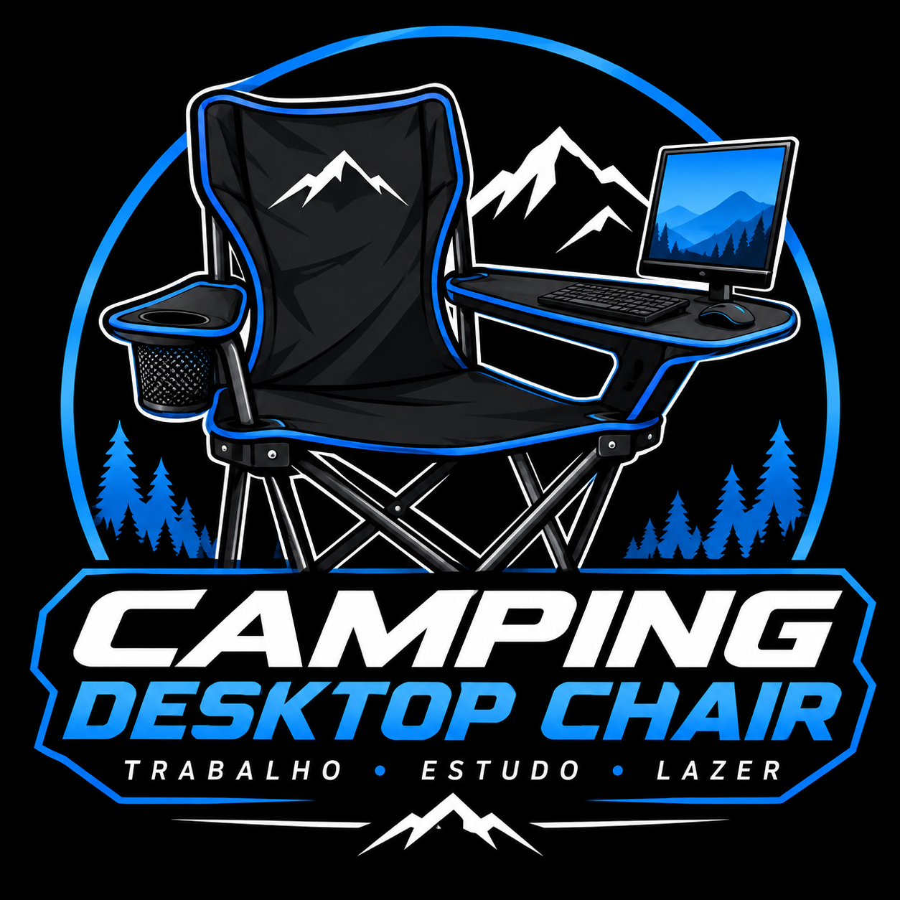

Explorador de Aventuras
Trilhas, cachoeiras, montanhas e desafios.
Responda 8 perguntas rápidas e descubra se você é explorador, contemplativo, cultural ou espírito livre, com destinos, experiências e estilo de viagem sob medida.
Você pode ter traços de mais de um perfil. O quiz mostra o quanto cada um combina com você e indica cinco destinos a partir disso.
Trilhas, cachoeiras, montanhas e desafios.
Silêncio, florestas, lagos e contemplação.
História, sabores, cidades e tradições.
Estrada, improviso e lugares fora do comum.



A Camping PC Chair é uma proposta que une mobilidade, criatividade e tecnologia: uma estação desktop integrada a uma cadeira de camping, pensada para levar praticidade a diferentes ambientes.
Saiba mais sobre a ideia →Planeje suas visitas, respeite as regras de cada área, recolha seu lixo e deixe o lugar como gostaria de encontrá-lo.